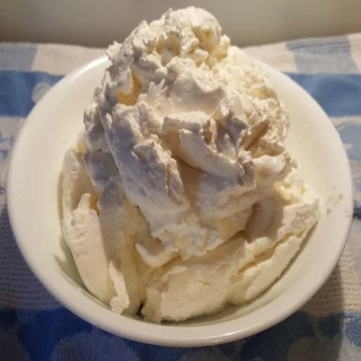

Greek yogurt is a great source of protein and I just can't get enough! Bake it, dip it, drink it, or just eat it. There are many versatile ways to use this in all your cooking.
Making your own is a great way to get the right texture you want as well as remove a lot of the whey for a nice keto dessert.
Using a sous vide machine helps a lot to prevent any burning in the initial step and an easy way to keep a consistent temp for the incubation process.
Ingredients
- 1 gallon Milk
- yogurt starter or 1 cup(8oz) full fat plain yogurt
Instructions
- Set sous vide to 180 F.
- Heat your gallon of milk for 30 minutes
- Take out from sous vide and let it cool to to under 110 F. Use a thermometer to confirm temperature to prevent killing bacteria from the starter/yogurt.
- Combine starter/yogurt with the cooled milk.
- Set sous vide to 109 F.
- Pour milk into glass jars and incubate in the sous vide for 12 hours, or for a more thick yogurt, up to 24 hours.
- Once done, empty into nylon mesh strainer to remove as much whey as you like to create a nice thick greek yogurt.